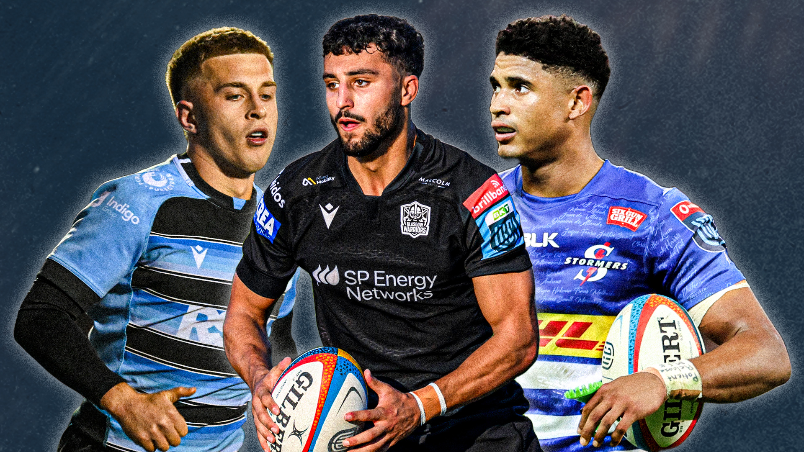
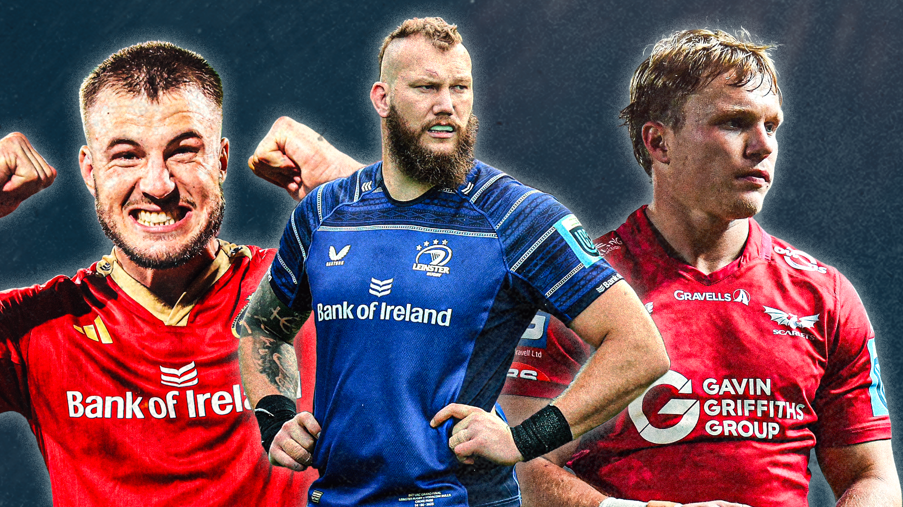

Skip to main content
URC Fantasy Rugby League logo
Fantasy Rugby League
Home
Fantasy League Tables
URC Fixtures
News
Video Highlights
Latest News

URC Opening Weekend

URC: A New Wave of Sponsors Upping the Game
5 Players to watch in the BKT URC this season
Player Interviews
URC Opening Weekend
URC: A New Wave of Sponsors Upping the Game
5 Players to watch in the BKT URC this season
Back to navigation